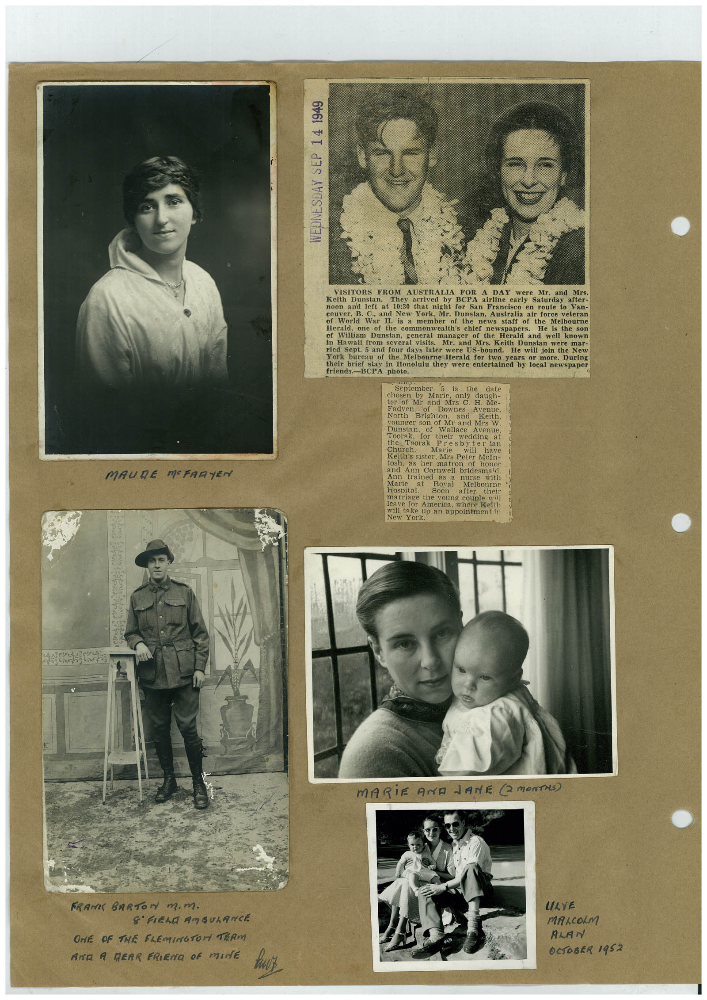

Book 1 · scan 101


Description
Transcription
Context
Review notes
Compare the machine draft with the scan. Handwriting and names need human review.
Artifacts
Edit the artifacts field in this note’s frontmatter to change these records. This summary is generated.
B01-S101-A01 — Newspaper clipping, Photo & Handwritten note — Book 1, scan 101
Types: Newspaper clipping, Photo, Handwritten note
Scope: Whole scanned page; individual items can be split out during review.
Caption: Not mapped yet.
Caption source: Not recorded yet.
Caption status: unmapped
Machine transcription
WEDNESDAY SEP 14 1949 MAURE MERRYEN VISITORS FROM AUSTRALIA A DAY Keith Dunstan. They arrived by were Mr. and Mrs. BCPA airline early Saturday after- noon and left at 10:30 that night for San Francisco en route to Van- couver, B. C., and New York, Mr. Dunstan, Australia air force veteran of World War I. is a member of the news staff of the Melbourne Herald, one of the commonwealth's chief newspapers. He is the son ef William Dunstan, general manager of the Herald and well known in Hawaii from several visits. Mr. and Mrs. Keith Dunstan were mar- ried Sept. 5 and four days later were US-bound. He will join the New York bureau of the Melbourne Herald for two years or more. During their brief stay in Honolulu they were entertained by local newspaper friends.-BCPA photo. September 5 is chosen by the date Marie, only daugh- ter of Mi and Mis C. H. Mc- Native" Brish On. Downes Avenue. North and Keith. vounger son of Mr and Mrs W Dunstan. of Wallace Avenue. Toorak, for their wedding at the hoorak Presbyter ian Church. Marie will have Keith's sister, Mrs Peter McIn- tosh, as her matron of honor and Ann Cornwell bridesmaid Ann trained Marie at Hospital. Roval Melbourne Soon after their marriage the voung couple mill leave for America, where Keith will take up an appointment in New York. MARiE AND LANE @ MONTHS) FRANK BARToN m.m. 8' FIEND AM SUARNCE ONE OF THE FLEMINGTOM TERM AND A REAR FRIENA OF MINE LAYE MALOLM ALAN OCTOBER 1952